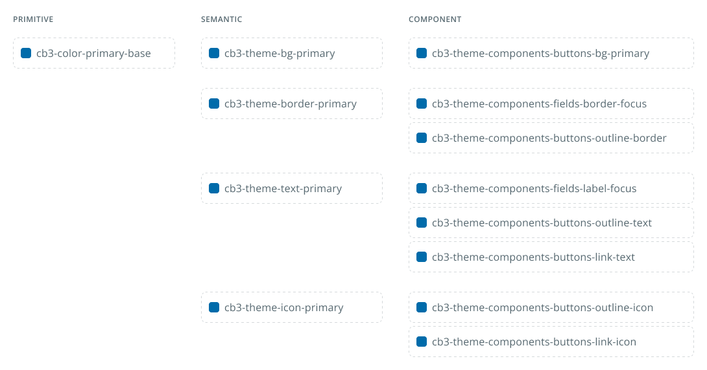

Contexto
El reto
Cuando me incorporé a Serviceware en 2019, la compañía gestionaba 5 productos digitales en producción y otros 3 en construcción, desarrollados por equipos independientes, cada uno con su propia tecnología, criterios visuales y nivel de madurez. No existía ningún sistema de diseño, por lo que las inconsistencias visuales y de interacción se acumulaban entre productos —y a menudo dentro de un mismo producto—, lo que generaba fricción para los usuarios y duplicaba el trabajo en diseño y desarrollo.
Por ello empecé por construir un UI kit simple, llamado Code Blue, que sirviera para resolver las inconsistencias más visibles. Con el tiempo, se añadieron más componentes y se inició una documentación básica (versión 2.0), pero aún había inconsistencias entre los equipos dado que cada uno utilizaba una tecnología diferente. Esto me llevó a proponer y liderar una actualización profunda hasta llegar a la versión actual (3.0): un Design System completo y escalable, con arquitectura de tokens en tres niveles, documentación de componentes y patrones, con una alineación real con desarrollo, y con gobernanza distribuida entre equipos pero conmigo como eje de decisión y coherencia.
Mi rol
He sido el owner del Design System desde el origen, tomando las principales decisiones de arquitectura y diseño de componentes, y liderando la documentación del sistema en colaboración con otros diseñadores. Trato Code Blue como un producto interno que evoluciona con sus usuarios (equipos de diseño y desarrollo) más que como una librería estática.
Proceso
Entender antes que diseñar
Antes de proponer cambios estructurales en Code Blue 3.0, dediqué tiempo a entender qué estaba pasando realmente en los productos. Hice una auditoría transversal de los principales componentes utilizados y analicé cómo se diseñaban, evolucionaban e implementaban en cada equipo. Esto incluyó conversaciones con Product Designers, Product Owners, Product Leads y desarrolladores de los distintos productos para entender qué les ayudaba y qué les frenaba en su día a día con el sistema.
Los hallazgos cambiaron mi planteamiento inicial:
- Varios componentes estaban duplicados o implementados de forma inconsistente entre productos.
- Los tokens existentes estaban a nivel primitivo, sin una capa semántica que permitiera abstraer su significado dentro de la interfaz.
- Había componentes creados para casos de uso muy específicos que no podían escalar a otros contextos.
La auditoría me dejó claro que el problema no era visual, era estructural. No bastaba con rediseñar componentes, sino que había que rediseñar la base sobre la que se construían. Esa conclusión definió todo lo que vino después.
Nueva arquitectura de tokens en tres niveles
Una de las decisiones técnicas más importantes fue redefinir la arquitectura de tokens del sistema. El reto fue pasar de una capa única de tokens primitivos a un modelo con tres niveles que permitiera escalar el sistema sin romper su coherencia.

- Tokens primitivos: los valores base del sistema (paleta de colores, escalas tipográficas, espaciados).
- Tokens semánticos: una capa que describe la intención del token dentro de la interfaz (background, text, border, icon), desacoplando los valores visuales de su uso.
- Tokens de componente: la capa que conecta la arquitectura de tokens con implementaciones concretas, permitiendo adaptar cada componente sin afectar al sistema global.
Esta estructura permitió introducir cambios visuales (temas, rebranding, ajustes de densidad...) sin tener que retocar manualmente múltiples componentes, lo que antes era muy difícil de gestionar. Además permitió alinear los equipos utilizando una única arquitectura de tokens para las distintas tecnologías que se utilizaban. En este punto pude convencer a la mayoría de los equipos de las ventajas de alinearnos en la implementación, y todos excepto dos decidieron migrar sus desarrollos a una tecnología común (PrimeNG).
Los componentes del sistema
Cada componente combina patrones estándar con piezas custom diseñadas para casos concretos del producto, como el componente de entrada de texto Multi-language. Todos incluyen variantes, estados y especificaciones de uso, y funcionan como acuerdo entre diseño y desarrollo. Los componentes se diseñan siguiendo los estándares de accesibilidad WCAG 2.1 nivel AA. Además, la inteligencia artificial juega un papel cada vez más relevante en mi trabajo con el sistema, ya que la utilizo como apoyo para generar ideas, prototipos rápidos que testear, acelerar la generación de documentación de componentes y para realizar validaciones de accesibilidad.
Gobernanza distribuida, pero con un eje claro
Cuando llegó el momento de definir cómo se mantendría el sistema vivo, la compañía decidió no crear un equipo dedicado al Design System. La responsabilidad se distribuiría entre los equipos de producto, con un modelo colaborativo.
Mi decisión fue asumir el rol de eje y referencia: el sistema necesitaba alguien que tomara las decisiones finales sobre arquitectura, componentes y patrones, aunque las contribuciones vinieran de equipos diversos.
En la práctica esto significó:
- Definir un proceso de contribución claro: cualquier necesidad de un equipo pasa por una auditoría sistémica antes de convertirse en un nuevo componente o variante.
- Asumir el rol de QA de diseño del sistema, revisando que cada cambio mantenga la coherencia visual y funcional.
- Centralizar la documentación y los principios en un ecosistema combinado de Figma, Storybook y ZeroHeight, accesible para todos los equipos.
- Establecer periodos de adaptación para cambios que afecten a múltiples productos, evitando bloquear el desarrollo.
Para mantener el sistema cerca de las necesidades reales, llevé a cabo sesiones de feedback con los equipos sobre cuestiones críticas como la nomenclatura de componentes y tokens, o qué información era realmente relevante en la documentación para facilitar el handoff entre diseño y desarrollo.
Este modelo me ha permitido mantener el equilibrio entre dos necesidades que parecen opuestas: la consistencia del sistema y la autonomía de los equipos.
Impacto
Code Blue 3.0 da soporte a más de 12 productos digitales, con una adopción del 80% entre los equipos de producto y una reducción del 25% en el tiempo de implementación de nuevos componentes. Lo más importante es que se ha establecido un lenguaje común entre diseño y desarrollo, reduciendo la fricción en el handoff y permitiendo que los equipos avancen de forma más eficiente y consistente.
Aprendizajes
Code Blue es un proyecto que sigue vivo, y eso me obliga a pensarlo no como algo terminado sino como algo en evolución constante. Hay cuatro aprendizajes que me llevo de estos seis años:
El sistema crece al ritmo del producto, no al revés. Si hubiese intentado construir Code Blue 3.0 desde el principio habría fracasado. Empezar con un UI kit simple fue la decisión correcta que nos permitió ganar tracción y construir credibilidad antes de pedir la inversión necesaria para un sistema completo.
Un Design System se mide en contexto, no en aislado. El verdadero reto no es lo bonito que se ve en una librería de componentes, sino cómo se comporta cuando lo aplican equipos distintos con propósitos distintos.
La arquitectura técnica define el techo del sistema. Durante años el sistema funcionó con tokens primitivos y suficiente disciplina, hasta que la falta de capa semántica empezó a frenar la evolución del producto. La capa semántica no es un detalle de implementación: es lo que separa una librería de un sistema vivo.
La gobernanza distribuida funciona, pero necesita un eje. Un modelo sin equipo dedicado puede sostenerse si hay alguien que mantiene la coherencia. He aprendido a equilibrar autonomía y visión única que evite la fragmentación.